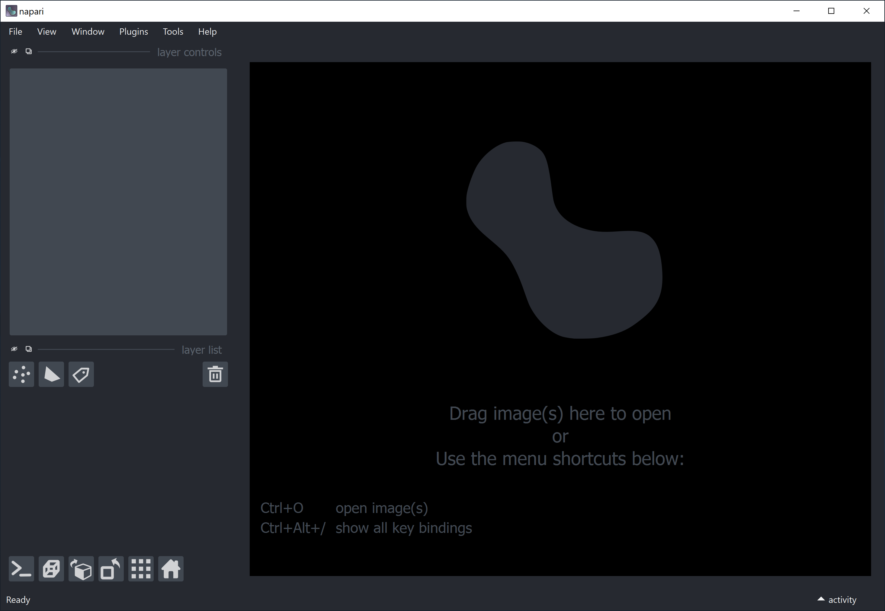
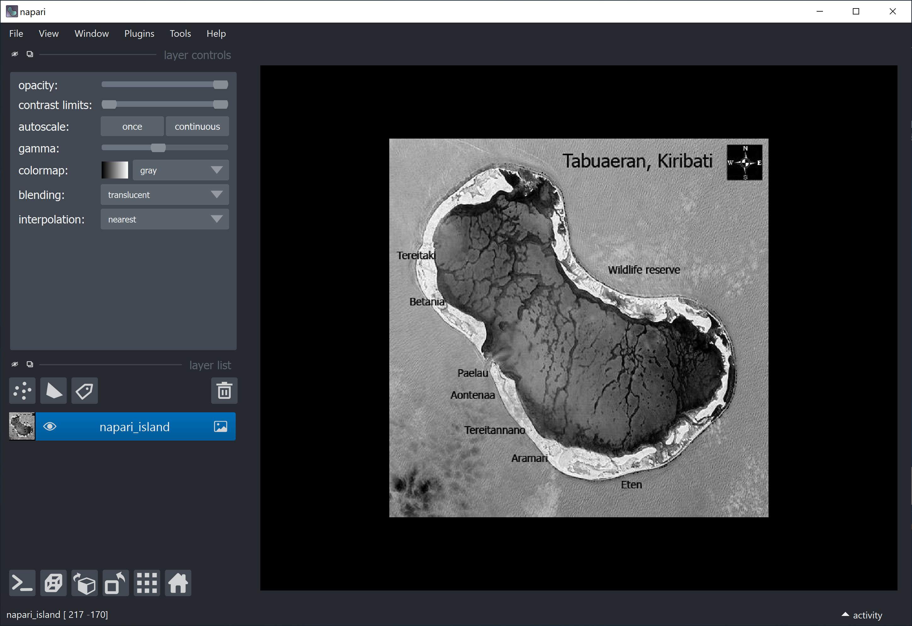
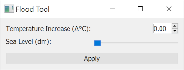
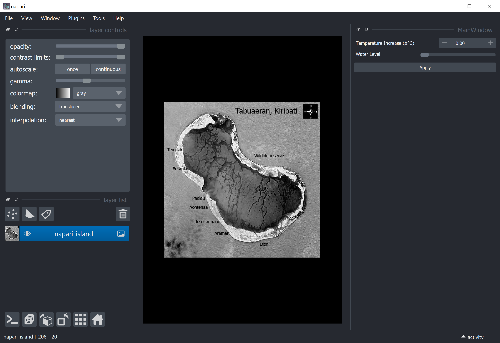
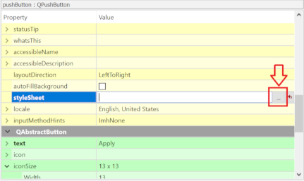
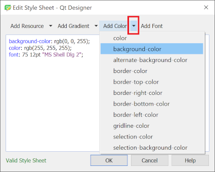
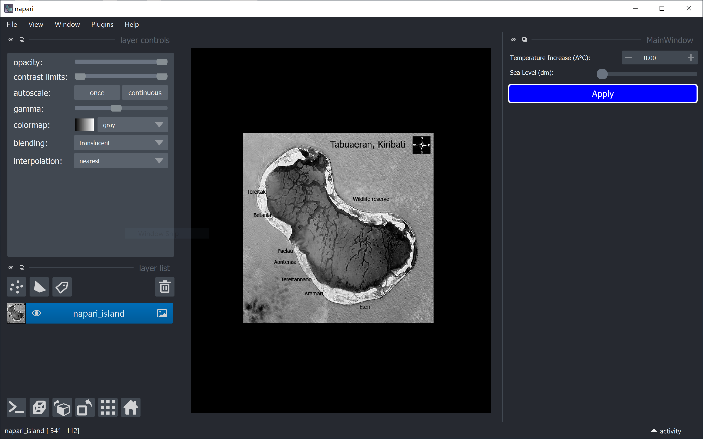
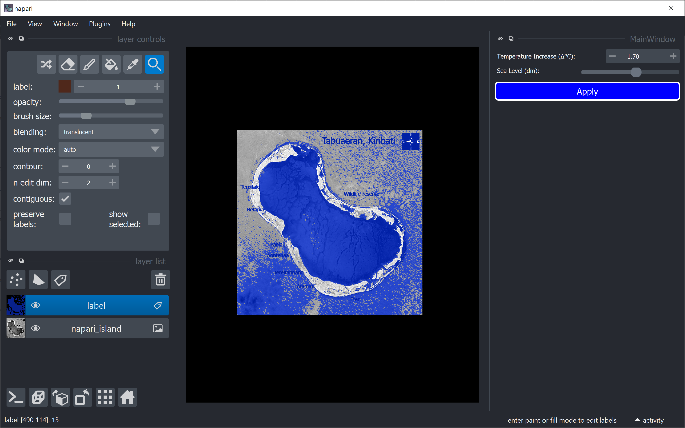
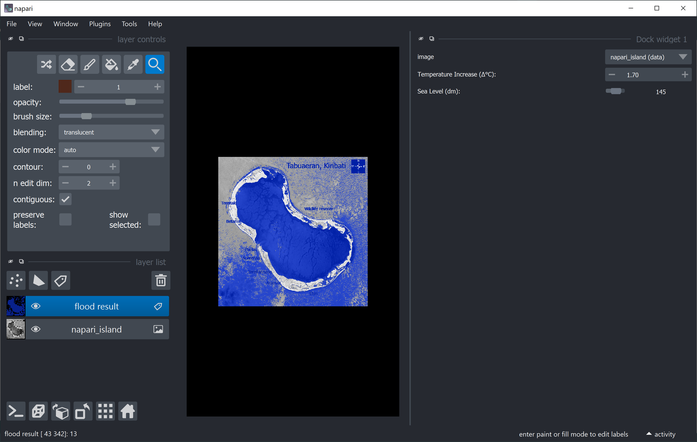

Custom user interfaces for Python (Part 3)
Contents
Custom user interfaces for Python (Part 3)#
Marcelo Zoccoler, November 29th 2021
Introduction#
Graphical user interfaces (GUIs) are powerful tools to make your scripts and functions available to users that are not necessarily familiar with a lot of coding, development platforms (e.g. Spyder or PyCharm) - and shouldn’t be experienced programmers in order to use your tools.
In this blog, we will cover a few interesting and versatile methods for you to create customized Qt-based GUIs for Python in general. Since our work revolves mostly around the visualization and processing of images, we will also show you a few ways to create great user interfaces for napari.
Blogs on this topic will cover:
Creating advanced GUIs for napari#
The previous entry showed you how to create more advanced GUIs with the aid of the designer tool. This third part will teach you how to import those GUIs to napari and how to produce them straight from python functions using magicgui.
Table of contents#
Installing and running napari#
The napari website has a more complete installation tutorial, but, overall, you should create a new conda environment and then type
conda install -c conda-forge napari
or
pip install napari[all]
in the command line. You can check if the installation was successful by calling napari from the command line and verifying if this window opens:

You can now add images to it by drag and drop! Pretty easy right? Why don’t you give it a try before we continue? Download the image above and drop it into napari by drag and drop (or use the usual “File -> Open File(s)…”). You should have this:

Wow! We have napari inside napari! ~~And that’s how you add a GUI to napari! 😆~~
Calling napari from a script#
Sometimes, it may be convenient to call the napari viewer from a script in order to display a series of image processing steps pre-defined in Python code. This can be done in a couple lines:
import napari
viewer = napari.Viewer()
The code above can be called from Jupyter Notebook or JupyterLab, Spyder, or your editor of preference. It is also possible to add images to the viewer from code. Download this image: Astronaut photo of Tabuaeran, Kiribati with villages and main landmarks by Government of USA, Government of Kiribati, under license CC BY-SA 3.0 https://creativecommons.org/licenses/by-sa/3.0, via Wikimedia Commons, where the following changes were made: green and red channels removed, then image was inverted regarding intensity. Put the image in the same folder as the code and let’s expand it a bit:
{kind=link}
import napari
from skimage.io import imread
viewer = napari.Viewer()
napari_image = imread('21_Map_of_Tabuaeran_Kiribati_blue.png') # Reads an image from file
viewer.add_image(napari_image, name='napari_island') # Adds the image to the viewer and give the image layer a name
After executing the block of code above, you should see the napari window like this:
(No module named 'skimage'? Remember to install scikit-image in your environment with conda install -c conda-forge scikit-image)

Wow! We have napari inside napari! [2]
Side-note: the napari island is part of the Kiribati country, which like Fiji, is also vulnerable to climate change effect.
Importing your fancy GUI to napari#
Here, I modified a bit the GUI from the previous post and it looks like this:

You can find the ‘.ui’ file to open this GUI with the designer here. Download it and save it to the same folder of your code.
Now let’s add it to napari! Modify the script as shown below:
import napari
from skimage.io import imread
from qtpy.QtWidgets import QMainWindow
from qtpy import uic
from pathlib import Path
# Define the main window class
class FancyGUI(QMainWindow):
def __init__(self, napari_viewer): # include napari_viewer as argument (it has to have this name)
super().__init__()
self.viewer = napari_viewer
self.UI_FILE = str(Path(__file__).parent / "flood_tool.ui") # path to .ui file
uic.loadUi(self.UI_FILE, self) # load QtDesigner .ui file
viewer = napari.Viewer()
napari_image = imread('21_Map_of_Tabuaeran_Kiribati_blue.png') # Reads an image from file
viewer.add_image(napari_image, name='napari_island') # Adds the image to the viewer and give the image layer a name
flood_widget = FancyGUI(viewer) # Create instance from our class
viewer.window.add_dock_widget(flood_widget, area='right') # Add our gui instance to napari viewer
This code does:
Define a class that initializes your GUI (named ‘FancyGUI’ in this case);
Pass the napari viewer as an argument to this class (with
def __init__(self, napari_viewer):);Import and applies your GUI (with
uic.loadUi(self.UI_FILE, self));Add an instance of this class to the viewer (
viewer.window.add_dock_widget(flood_widget, area='right')).
When you run the script, you should see the screen below:

It is now embedded into napari! Sweet 🍬!
If you want to update your GUI layout, let’s say, by changing a button color, you can go back to designer, select the button and fill the styleSheet field by clicking on ...:

and choosing colors (background, border, etc) by clicking on the small arrowhead next to “Add color”:

It will add a line with the chosen color in CSS syntax. Many lines can be added (each ending with ;) to further elaborate the style.

Creating a callback function#
As you may have noticed, our GUI is there, but it does nothing yet. We need to link click/change events to callback functions. Just for fun, let’s create a function that relates temperature increases to sea level.
Disclaimer: This specific function, although based on the fact that global warming contributes to increase sea levels, has no scientific background to support it, and it was completely made-up just for a fun illustration. Climate change is a complex subject that involves many internal and external factors which I do not have the expertise to explain.
def flood(image, delta):
new_level = delta*85
label_image = image <= new_level
label_image = label_image.astype(int)*13 # label number 13 is blue in napari
return(label_image, new_level)
This function takes an image and a delta (temperature) as inputs. It converts delta into new_level (new sea level) and creates a label image where the labeled region corresponds to grayscale levels which are below new_level. It returns label_image and new_level. It can be simplified, but let’s keep it like this for future reasons.
Now, we need to link this function to the ‘Apply’ button. This can be done with the general command pushButton.clicked.connect(callback_function).
Let’s write a callback function that calls our flood function:
def apply_delta(self):
label, level = flood(image, delta)
We now have to specify to our callback where it gets the variables image and delta.
imageis the input image layer in napari, so let’s store it as a numpy array withimage = self.viewer.layers['napari_island'].data;deltais the input value inside the Spinbox widget, so let’s get it withdelta = self.doubleSpinBox.value();labelis the output label image, we have to add it to the viewer withself.viewer.add_labels(label);levelis the output sea level, which we want also to show as our Slider widget, so we set it withself.horizontalSlider.setValue(level).
Lastly, we use a flag (self.label_layer) to update the label layer rather than creating a new one every time. The code now looks like this:
import napari
from skimage.io import imread
from qtpy.QtWidgets import QMainWindow
from qtpy import uic
from pathlib import Path
def flood(image, delta):
new_level = delta*85
label_image = image <= new_level
label_image = label_image.astype(int)*13 # label 13 is blue in napari
return(label_image, new_level)
# Define the main window class
class FancyGUI(QMainWindow):
def __init__(self, napari_viewer): # include napari_viewer as argument (it has to have this name)
super().__init__()
self.viewer = napari_viewer
self.UI_FILE = str(Path(__file__).parent / "flood_tool.ui") # path to .ui file
uic.loadUi(self.UI_FILE, self) # load QtDesigner .ui file
self.label_layer = None # stored label layer variable
self.pushButton.clicked.connect(self.apply_delta)
def apply_delta(self):
image = self.viewer.layers['napari_island'].data # We chose to use the layer name to find the correct image layer
delta = self.doubleSpinBox.value()
label, level = flood(image, delta)
if self.label_layer is None:
self.label_layer = self.viewer.add_labels(label)
else:
self.label_layer.data = label
self.horizontalSlider.setValue(level)
viewer = napari.Viewer()
napari_image = imread('21_Map_of_Tabuaeran_Kiribati_blue.png') # Reads an image from file
viewer.add_image(napari_image, name='napari_island') # Adds the image to the viewer and give the image layer a name
flood_widget = FancyGUI(viewer) # Create instance from our class
viewer.window.add_dock_widget(flood_widget, area='right') # Add our gui instance to napari viewer
Now when we increase the temperature and click Apply, the island starts to flood :cold_sweat::ocean::

Automatically creating a GUI from a function with magicgui#
What if we could ‘magically’ simplify all that and just say: ‘Dear computer, please create a GUI for my function’? We can ~~literally~~ almost do that with 🧙♂️magicgui! If we put some annotations right next to the variables in our function, we can create the GUI with one line of code 😻 ! So let’s not wait any longer and add those annotations to our function:
from napari.types import ImageData, LabelsData
def flood(image: ImageData, delta: float = 0, new_level: int = 0) -> LabelsData:
new_level = delta*85
label_image = image <= new_level
label_image = label_image.astype(int)*13 # label 13 is blue in napari
return(label_image)
Here we are specifying that:
imageis data from a napari image layer (ImageData);deltaisfloat;new_levelisinteger;output
label_imagewill hold data from a napari labels layer (LabelsData).
You may have noticed that we placed new_level as input instead of output. That’s because magicgui creates widgets (like buttons, sliders, etc) based on the input variables.
Now, here it comes… the one-liner: 🥁🥁
flood_widget = magicgui(flood)
Done! GUI was created and stored in flood_widget. The full code and the result become like this:
import napari
from skimage.io import imread
from magicgui import magicgui
from napari.types import ImageData, LabelsData
def flood(image: ImageData, delta: float=0, new_level: int=0) -> LabelsData:
new_level = delta*85
label_image = image <= new_level
label_image = label_image.astype(int)*13 # label 13 is blue in napari
return(label_image)
viewer = napari.Viewer()
napari_image = imread('21_Map_of_Tabuaeran_Kiribati_blue.png') # Reads an image from file
viewer.add_image(napari_image, name='napari_island') # Adds the image to the viewer and give the image layer a name
flood_widget = magicgui(flood) # Create GUI with magicgui
viewer.window.add_dock_widget(flood_widget, area='right') # Add our gui instance to napari viewer
Neat! Just a couple of things missing though. We only get Spinboxes now, what about the Slider? Don’t worry, we can fix this still maintaining the “one-liner”, although a bigger one now 😬 . We can add widget options as python dictionaries, like this:
flood_widget = magicgui(flood, delta={'label': 'Temperature Increase (Δ°C):',
'min': 0, 'max' : 3, 'step': 0.1},
new_level={'label':'Sea Level (dm):', 'widget_type':'Slider',
'min': 0, 'max' : 255, 'enabled' : False},
auto_call=True)
Now, you get practically the same result as the earlier approach. If you don’t know the widget options, take a look here to find the widget you want and discover more about its parameters.
We discarded the button here by using auto_call=True. This means that the callback function will be executed whenever the user change any of the inputs. This results in a smoother usability, but be careful, because if the callback function is too slow, it may get called several times before returning, which can lead to frozen screens.
One thing missing is that the ‘Sea level’ slider does not get updated since it is an input now. But, we can append a callback function to the spinbox that updates the slider every time delta changes! Add the following code after creating the widget with magicgui (thanks Talley Lambert for this tip!):
@flood_widget.delta.changed.connect # Connect a function to delta (spinbox widget)
def update_level(delta: float):
flood_widget.new_level.value = delta * 85 # Update slider when spinbox changes
You can look for further documentation and tutorials at magicgui quickstart and magicgui in napari.
Creating a GUI from FunctionGui#
The third approach is a more straightforward one. By using and modifying FunctionGui (the type that is returned by magicgui), we can have a more direct access to all options.
We keep the annotated version of our function, but instead of passing it to magicgui, we will define a new FunctionGui class, based on this example and pass our flood function to FunctionGui. So, I will start with the code shown below:
def flood(image: ImageData, delta: float=0, new_level: int=0) -> LabelsData:
new_level = delta*85
label_image = image <= new_level
label_image = label_image.astype(int)*13 # label 13 is blue in napari
return(label_image)
class MyGui(FunctionGui):
def __init__(self):
super().__init__(
flood, # Here is where we pass our custom annotated function to FunctionGui
call_button=True,
layout='vertical',
param_options={}
)
# do whatever other initialization you want here
If we open napari, add our image and add MyGui to napari, we get the same result as shown before (full code at the end of this section).
Similarly, to match the widgets style we want (like in previous results), we can provide dictionaries to the param_options, like this:
class MyGui(FunctionGui):
def __init__(self):
super().__init__(
flood, # Here is where we pass our custom annotated function to FunctionGui
call_button=True,
layout='vertical',
param_options={'delta':
{'label': 'Temperature Increase (Δ°C):',
'min': 0, 'max' : 3, 'step': 0.1},
'new_level':
{'label':'Sea Level (dm):', 'widget_type':'Slider',
'min': 0, 'max' : 255, 'step' : 1}}
)
# do whatever other initialization you want here
We can modify the __init()__ and the __call()__ functions to gain access to other widgets and get/send other variables that are not images. For example, besides label_image, we can make our function return new_level again as an annotation and use its value to change the slider when the user hits the ‘Run’ button. Check the complete code and result below:
import napari
from skimage.io import imread
from napari.types import ImageData, LabelsData, LayerDataTuple
from magicgui.widgets import FunctionGui
def flood(image: ImageData, delta: float=0, new_level: int=0) -> LayerDataTuple:
new_level = delta*85
label_image = image <= new_level
label_image = label_image.astype(int)*13 # label 13 is blue in napari
return((label_image, {'name': 'flood result','metadata': {'new_level':new_level}}))
class MyGui(FunctionGui):
def __init__(self):
super().__init__(
flood,
call_button=False,
auto_call=True,
layout='vertical',
param_options={'delta':
{'label': 'Temperature Increase (Δ°C):',
'min': 0, 'max' : 3, 'step': 0.1},
'new_level':
{'label':'Sea Level (dm):', 'widget_type':'Slider',
'min': 0, 'max' : 255, 'enabled' : False}}
)
def __call__(self):
label_image = super().__call__()
new_level = round(label_image[1]['metadata']['new_level'])
self.new_level.value = new_level
napari_image = imread('21_Map_of_Tabuaeran_Kiribati_blue.png')
viewer = napari.Viewer()
viewer.add_image(napari_image, name='napari_island')
flood_widget = MyGui()
viewer.window.add_dock_widget(flood_widget, area='right')

Conclusion#
We have implemented our GUI in 3 different ways! Check which way is advantageous for you and play with it a little bit, because in the next part we will teach you how to turn it into a napari plugin and distribute it 🎉